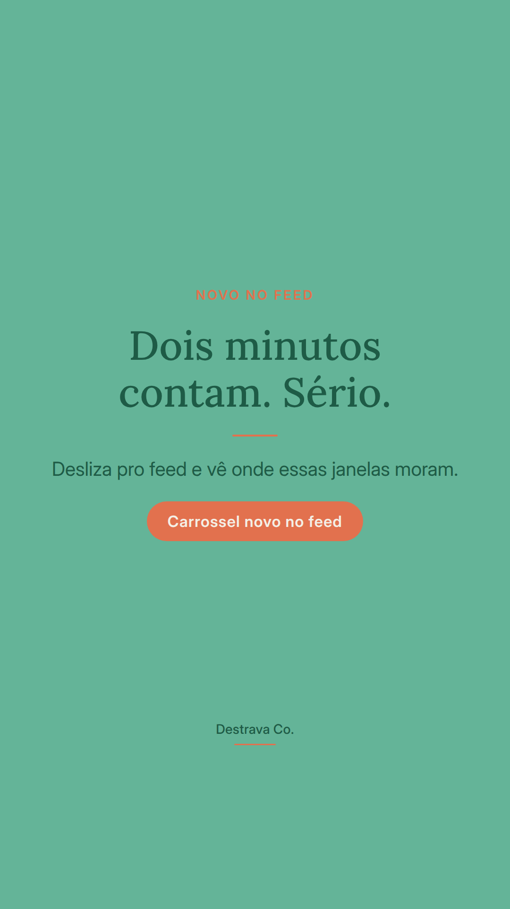
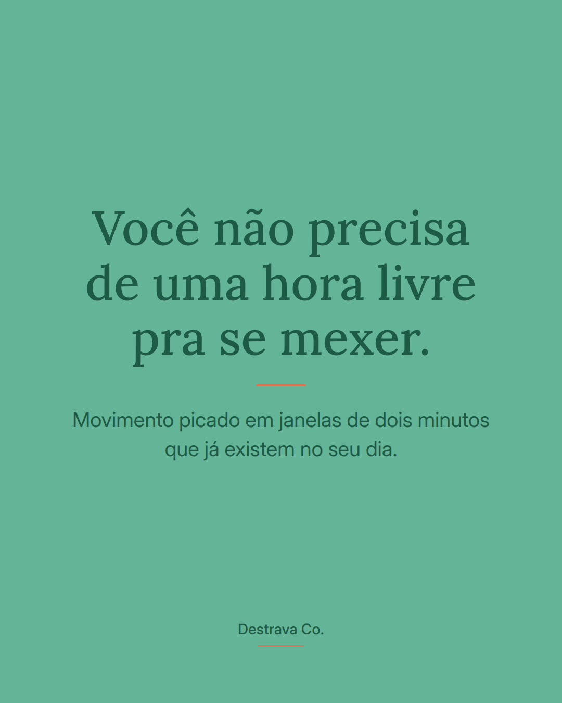
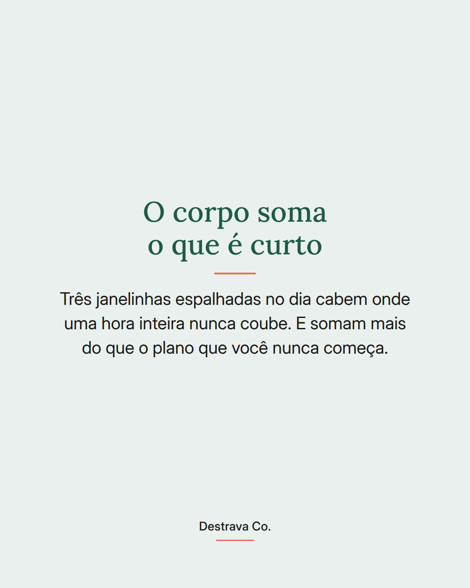
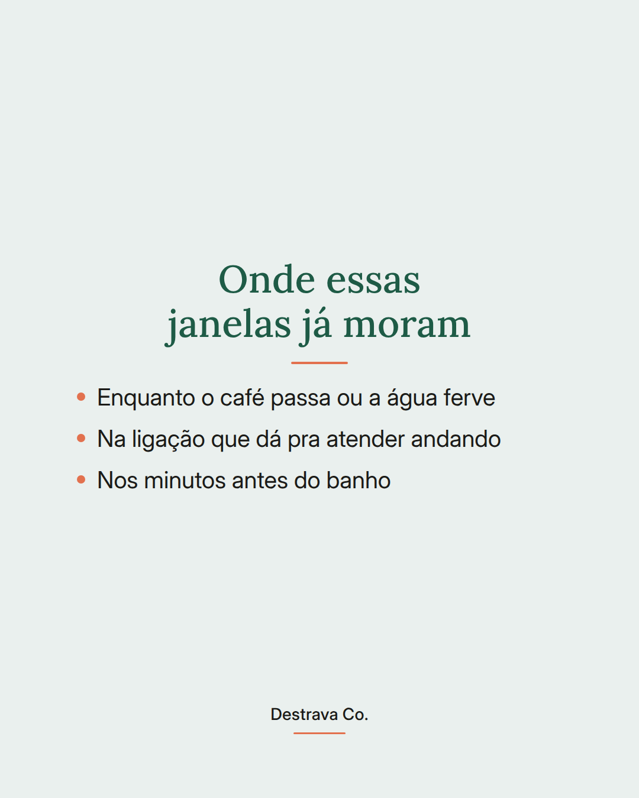
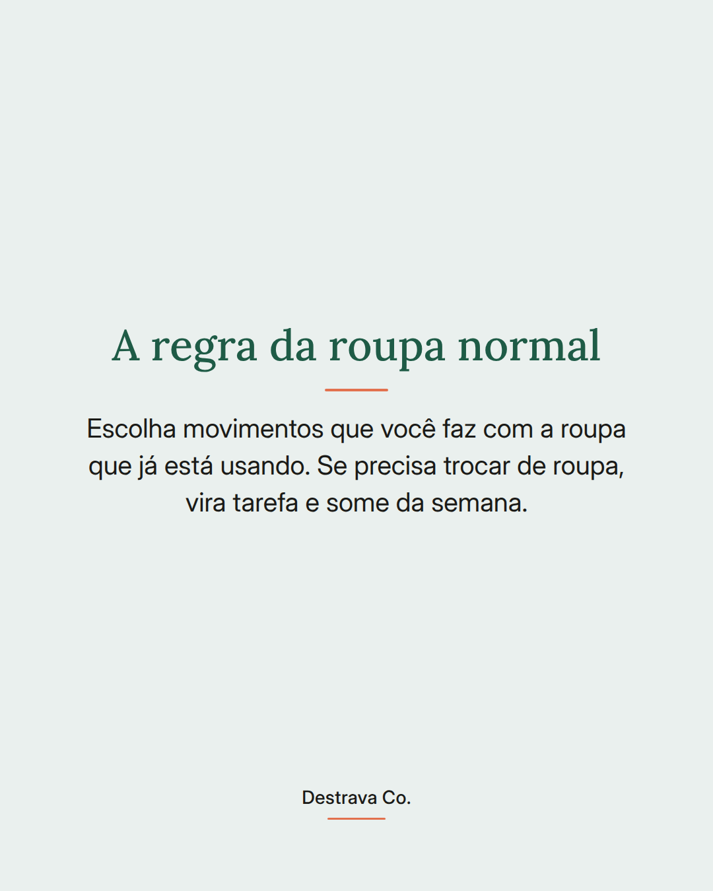
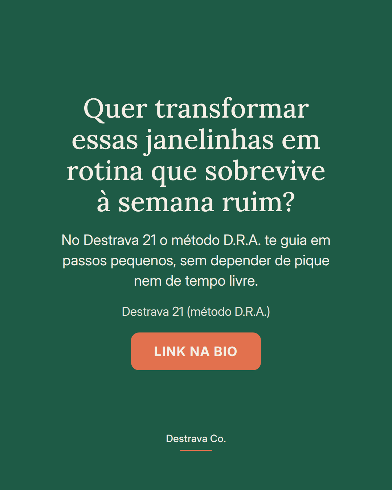

Movimento não precisa de uma hora livre: precisa de duas janelinhas que já existem no seu dia.
Disposição no dia a dia vem muito mais de mexer o corpo várias vezes em pedaços curtos do que de um plano perfeito que nunca começa. Em casa, sem academia, sem roupa de treino.
O teste é simples: se dá pra fazer com a roupa que você já está usando, enquanto o café passa ou antes do banho, o hábito sobrevive. Se exige preparação, ele vira tarefa e desaparece na primeira semana corrida.
Começa escolhendo uma janelinha só. Uma. Amanhã você repete na mesma hora e deixa o corpo lembrar sozinho.
Salva pra lembrar no meio da correria e manda pra uma amiga que vive dizendo que não tem tempo. Se quiser montar isso num caminho guiado, o Destrava 21 te mostra como destravar, repetir e ajustar no seu ritmo.